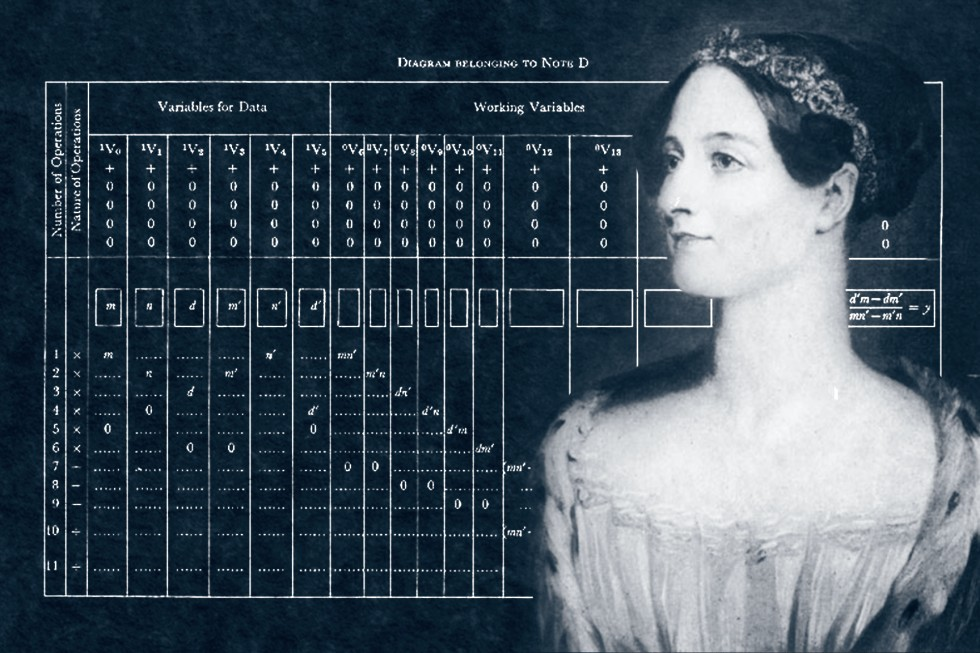

Augusta Ada Byron King, Condessa de Lovelace, atualmente conhecida como Ada Lovelace, foi uma matemática e escritora inglesa. Hoje é reconhecida principalmente por ter escrito o primeiro algoritmo para ser processado por uma máquina, a máquina analítica de Charles Babbage.
Augusta Ada Byron, Condessa de Lovelace, foi uma das responsáveis pelo computador que temos hoje. Nascida no dia 10 de dezembro de 1815, Ada Lovelace,por influência da mãe que a criou ainda na infância ela desenvolveu interesse pela ciência. A ideia era que a menina tivesse uma base de conhecimento que a afastasse do que a mulher chamava de “insanidades” do pai. ela é criadora do primeiro algoritmo do mundo. Sua contribuição para a máquina analítica do matemático Charles Babbage mudou o rumo do que foi criado nas décadas seguintes.
As notas de Lovelace foram classificadas alfabeticamente de A a G, e em uma dessas notas em especial, a nota G, é conhecida como o primeiro programa (algoritmo) de computador do mundo. Era um algoritmo que computava os números de Bernoulli, e isso rendeu a ela o título de primeira programadora da história.